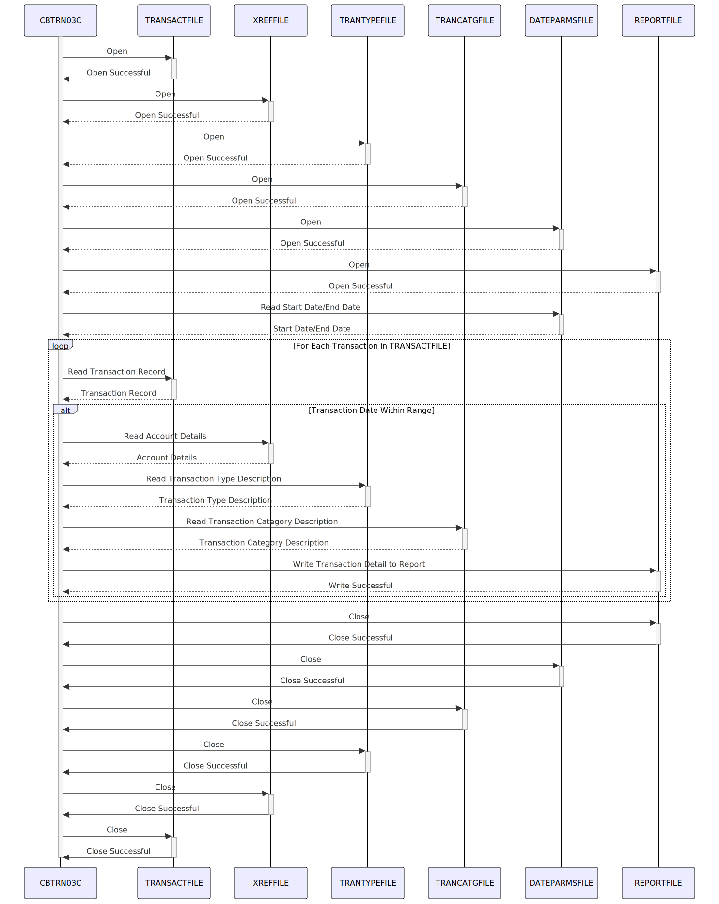

Gerado em: 1º de outubro de 2024
Título do Documento: CardDemo Relatório Detalhado de Transações de Cartão de Crédito - Especificação do Programa
Descrição Resumida: Este programa gera um relatório detalhado das transações de cartão de crédito dentro de um intervalo de datas especificado. Ele lê registros de transações, recupera dados relacionados (conta, tipo de transação, categoria) e os formata em um relatório com totais de página, totais de conta e um total geral.
Histórias do Usuário: Como analista financeiro, preciso de um relatório detalhado de todas as transações de cartão de crédito dentro de um intervalo de datas específico para que eu possa analisar padrões de transações, reconciliar contas e identificar fraudes potenciais.
Épico Relacionado: 4 - Processamento de Transações
Requisitos Técnicos:
TRANSACT-FILE.
TRAN-RECORD de TRANSACT-FILE.CARD-XREF-RECORD em XREF-FILE com base em TRAN-CARD-NUM.TRAN-TYPE-RECORD em TRANTYPE-FILE com base em TRAN-TYPE-CD.TRAN-CAT-RECORD em TRANCATG-FILE com base em TRAN-TYPE-CD e TRAN-CAT-CD.TRANSACTION-DETAIL-REPORT.WS-PAGE-TOTAL, WS-ACCOUNT-TOTAL, WS-GRAND-TOTAL.TRANSACTION-DETAIL-REPORT formatado em REPORT-FILE.DATE-PARMS-FILE.
WS-START-DATE e WS-END-DATE de DATE-PARMS-FILE.WS-START-DATE e WS-END-DATE sejam datas válidas.WS-START-DATE não é posterior a WS-END-DATE.TRAN-PROC-TS de TRAN-RECORD.TRANSACTION-DETAIL-REPORT formatados, WS-PAGE-TOTAL, WS-ACCOUNT-TOTAL, WS-GRAND-TOTAL.REPORT-NAME-HEADERTRANSACTION-HEADER-1TRANSACTION-HEADER-2TRANSACTION-DETAIL-REPORTREPORT-PAGE-TOTALSREPORT-ACCOUNT-TOTALSREPORT-GRAND-TOTALSREPORT-FILE.TRANFILE-STATUS, CARDXREF-STATUS, etc.) para verificar erros durante operações de arquivo (abrir, ler, gravar, fechar).Modelos Relacionados:
TRAN-RECORD: Representa um registro de transação.
TRAN-CARD-NUM (Alfanumérico): Número do cartão de crédito.TRAN-TYPE-CD (Alfanumérico): Código do tipo de transação.TRAN-CAT-CD (Numérico): Código da categoria da transação.TRAN-AMT (Numérico): Valor da transação.TRAN-PROC-TS (Alfanumérico): Timestamp de processamento da transação.CARD-XREF-RECORD: Representa um registro de referência cruzada do cartão.
FD-XREF-CARD-NUM (Alfanumérico): Número do cartão de crédito.XREF-ACCT-ID (Alfanumérico): ID da conta associada ao cartão.TRAN-TYPE-RECORD: Representa um registro do tipo de transação.
FD-TRAN-TYPE (Alfanumérico): Código do tipo de transação.TRAN-TYPE-DESC (Alfanumérico): Descrição do tipo de transação.TRAN-CAT-RECORD: Representa um registro da categoria da transação.
FD-TRAN-TYPE-CD (Alfanumérico): Código do tipo de transação.FD-TRAN-CAT-CD (Numérico): Código da categoria da transação.TRAN-CAT-TYPE-DESC (Alfanumérico): Descrição da categoria da transação.Configurações:
TRANFILE: Caminho para o arquivo de transações (TRANSACT-FILE).CARDXREF: Caminho para o arquivo de referência cruzada do cartão (XREF-FILE).TRANTYPE: Caminho para o arquivo de tipo de transação (TRANTYPE-FILE).TRANCATG: Caminho para o arquivo de categoria de transação (TRANCATG-FILE).TRANREPT: Caminho para o arquivo de saída do relatório (REPORT-FILE).DATEPARM: Caminho para o arquivo de parâmetros de data (DATE-PARMS-FILE).REPORT-NAME-HEADER: Layout do cabeçalho do nome do relatório.TRANSACTION-HEADER-1: Layout do cabeçalho da transação 1.TRANSACTION-HEADER-2: Layout do cabeçalho da transação 2.TRANSACTION-DETAIL-REPORT: Layout da linha de detalhe da transação.REPORT-PAGE-TOTALS: Layout da linha de totais da página.REPORT-ACCOUNT-TOTALS: Layout da linha de totais da conta.REPORT-GRAND-TOTALS: Layout da linha de totais gerais.Melhorias de Código:
Melhorias de Segurança:
Diagrama Conceitual:
–Made by “Smart Engineering” (by Compass.UOL)–